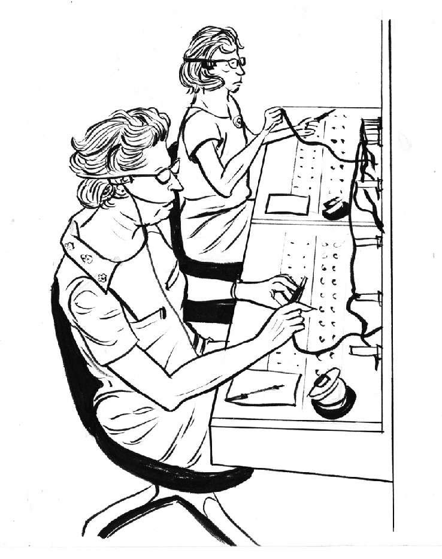
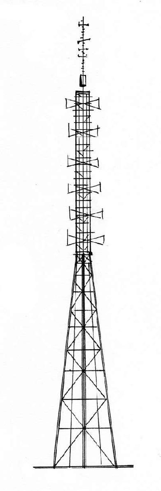

2011年8月，我住在伦敦格林尼治区，这里是时间的“起点”。当月6日到11日，伦敦和英国其他各地发生了多起骚乱。我从布莱克希斯山（Blackheath Hill）公寓的窗户望出去，看到有架直升机在附近的刘易舍姆（Lewisham）上空盘旋，那里有人正在实施抢劫并和警察对峙。同时，我将电视调到BBC的实况新闻频道，上面正在播出前文提到的直升机拍摄的画面。而我手里正拿着智能手机，用它关注着推特（Twitter）上有关刘易舍姆的最新报道。
这些事件的发生、报道、访问和处理实现了“实时”。实时意味着事件的拍摄和传输与观众体验同步进行。对于年轻一代的高科技用户而言，实时并没有什么特别。信息即时产生，我们即时接收并处理，现在看来再正常不过。但是实时的确极大地加速了信息的传播。
自邮电系统出现以来，大众传播最大的变化是电报的发明。第一封电报于19世纪30年代在德国发出，传输距离约为1千米。随后，大西洋两岸出现的一系列电报技术的发展和铺设基础电缆的活动，标志着19世纪30年代和40年代电报技术的迅速发展。这一时期为电报发展做出卓越贡献的是英国的威廉·福瑟吉尔·库克爵士（Sir William Fothergill Cooke）和查尔斯·惠特斯通（Charles Wheatstone），以及莫尔斯电码的发明人——美国的萨缪尔·芬利·布里斯·莫尔斯（Samuel F. B. Morse）。
19世纪50年代，第一封商业电报从纽约发往芝加哥，传输距离750英里（1 207千米），仅花了0.25秒（速度为1 100万英里/小时）。
第一个使用电报的人觉得这简直难以置信。19世纪60年代，一条横跨大西洋的电报电缆投入使用。19世纪70年代，英国已将电缆装备到当时遥远的殖民地印度。1902年，横跨太平洋的电报系统完成，自此地球上便布满了电缆，它们以前所未有的速度远距离传输和接收信息。在有线遍布全球之后，人们又发明了“无线”技术。
1895年，无线电技术的先驱阿尔伯特·图尔潘（Albert Turpain）在法国发送并接收了第一个莫尔斯无线电信号。虽然该信号只传输了25米，但却是巨大的成功。第二年一位名叫古列尔莫·马可尼（Guglielmo Marconi）的意大利人发送了他的第一个无线电信号，传输了6千米。马可尼将他的技术带到英国并创造了新的历史。1901年，第一个成功横跨大西洋的无线传输内容是一个字母“S”。
与此同时，其他发明家也在致力研究通过电线传输人声，而不仅仅是信号。19世纪70年代人们发明了电话，最早的商业电话服务分别于1878年和1879年出现在美国康涅狄格州的纽黑文市和英国伦敦。19世纪80年代中期，美国各大城市均已建立电话交换台。但直至1915年，第一个横跨美国大陆，即从纽约到旧金山的长途电话才打通。又过了12年，直到1927年无线电被用于传输声音时，人类的声音才得以跨过大西洋。

很难想象，这些新的大众通信手段对人类日常生活、人类对所处世界的认识以及对速度和时间的认识产生了多么深刻的影响。曾经，我们写信要花上数周甚至数月时间才能将消息传到世界另一端，但如今消息瞬间就能送达。但是当这一切成为“新常态”，人们就会有所期待，并且还会期待更快速、更方便的信息传送和接收方式。
各种创新层出不穷，快速涌现。1922年，BBC首次发出了无线电信息，至1925年，英国80%的地区已覆盖了地方站和转播站。同年，苏格兰发明家约翰·洛吉·贝尔德（John Logie Baird）在伦敦塞尔福里奇（Selfridges）百货商场演示了动画（当时只有剪影）的传输。两年后，阴极射线管问世，BBC于1932年首次进行实验性广播。1936年后，英国广播公司开始从位于北伦敦（North London）一座山上的亚历山德拉宫（Alexandra Palace）发送全面的广播服务，成为世界之首。
时至今日，我们经历了各种创新和发明，包括彩色电视、视频电话、卫星电话、无线电以及先进的计算机技术。如今，只需一台设备，我们就能观看彩色高清电视或“实时”收听广播、玩游戏、看新闻、接视频电话、发电子邮件；通过各种社交渠道与朋友、家人甚至陌生人即时通信、拍照、录视频、看时间，而且这一切都能一边走路一边进行。而这些动作实现同步进行不过是2005年以后才发生的事。现在，时间“变快”了。
如果想让时间变慢，我们可以在这台设备上观看从澳大利亚现场直播的沥青滴漏实验。实验中的沥青随时都有可能滴落……


亚历山德拉宫发射塔
普通人处理电子货币的过程现已非常迅速。银行之间即时通信，传递各类信息，支持我们在世界上几乎任何地方进行快速金融交易，或者通过网上银行在家完成各种交易。但是比起如今证券市场上闪电般迅速的交易，普通用户在银行交易方面的快速便捷简直不值一提。
无数商品和金融产品在证券市场上进行着有形或无形的交易。其中50%~70%的交易由计算机程序自动完成，无须人为干预。买卖在几毫秒间就能完成。
一种“高频”电子交易器可在1分钟内完成1 000次交易，但是每笔交易执行前都经过了无数次测试和计算。这些超高速计算机通过发出多条买卖订单测试市场，当另一台计算机通过一条订单与之连接时，其他未占用的订单则被取消。
人们设计了更高级的计算机程序来识别和拒绝其他类似的交易程序。这些程序打入市场，将股票价格抬高，并卖给其他程序，在几秒内赚得盆满钵满。
纽约证券交易所机房面积20 000平方英尺（1 858平方米，约有三个足球场大），摆满一行行属于不同金融机构的服务器，约有10 000多台，时刻分析着“市场”和交易。这些操作无须任何人工干预，速度超乎人类想象。
在竞争激烈的证券市场，信息从芝加哥商品市场（有形物品）传递到纽约股票市场（公司股票）的速度至关重要，关系到能否比竞争对手提前完成交易。这里的交易毫秒必争。借助光缆，信息从芝加哥传到纽约只需15毫秒。但是股票交易人员希望以更快的速度传递信息。此需求引发了一场竞争，即在芝加哥和纽约之间架设一条更直、更快的光纤线路，将信息传递速度提高一到两毫秒，为超快的交易计算机提供无比宝贵的时间。
闪电约会
希望前文已经建立了这样一个概念：我们生活和相互交流的方式正在变得越来越快，结果时间也变得格外珍贵。在这个快速、忙乱又纷繁的世界，我们正在将一切都变为流水线操作，包括寻找伴侣这件事，所以我们有了“闪电约会”这一活动。以前你需要花很多时间去努力认识“真命天子”，而现在你可以去一个地方，认识很多个“天子”，跟他们交谈3分钟到8分钟，如果在打铃前觉得找到了合适的人，做个记录交给组织者，问他们你的潜在对象是否对你同样有好感。一桩婚姻可能就此结成。
光在空气中的传播速度甚至比通过光纤传播还要快。为利用这一优势，人们通过修建发射塔在交易中心之间传递信息，大约只需8毫秒。不久的将来，传输交易信息可能只需几微秒，甚至几纳秒。